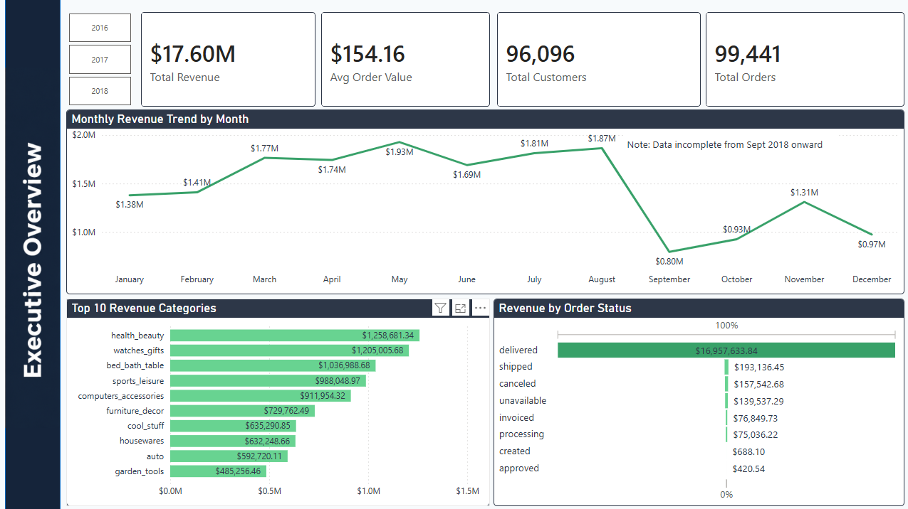
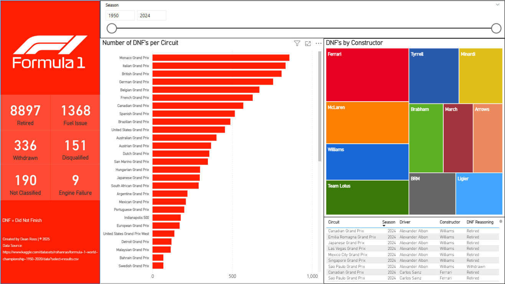
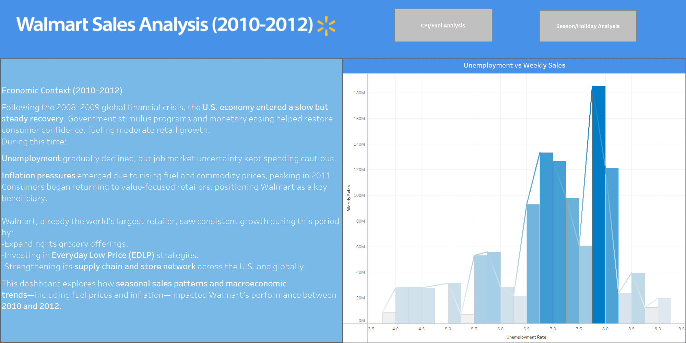
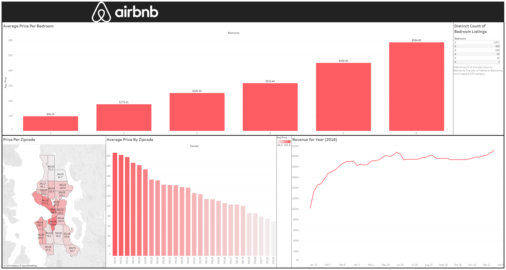

⭐SQL + Power BI — Olist E-Commerce Analytics
End-to-end analytics on 100,000+ e-commerce orders. Covers CLV modelling, cohort retention, seller performance, and revenue leakage — built in MySQL with a 4-page Power BI dashboard.

Data & Reporting Analyst
Turning raw data into decisions through SQL, Power BI, Python, and Tableau.
I'm a data and reporting analyst with 6+ years of experience in financial services, specialising in SQL, Power BI, Python, and Tableau. I build end-to-end analytics solutions, from writing complex queries on relational databases to designing executive-level dashboards that teams rely on. See below for my project work using real datasets to uncover real insights.

End-to-end analytics on 100,000+ e-commerce orders. Covers CLV modelling, cohort retention, seller performance, and revenue leakage — built in MySQL with a 4-page Power BI dashboard.

Live NBA player and team stats dashboard built with Python web scraping, MySQL storage, and Power BI. Filters dynamically by season, conference, and playoff vs regular season.

74 seasons of Formula 1 DNF data visualised by circuit, constructor, and failure reason. Interactive season range slider from 1950 to 2024.

Sales performance analysis across Walmart store locations and departments, built in Tableau with interactive filters and trend breakdowns.

Airbnb listing and pricing analysis built in Tableau, exploring revenue trends, neighbourhood performance, and occupancy patterns.
I'm a Toronto-based data analyst who genuinely loves the process of turning messy, complex data into something clear and useful. Whether that's a SQL query that uncovers a revenue leak, a Power BI dashboard that makes a trend impossible to ignore, or a Python script that saves a team hours of manual work — I'm at my best when data has a real problem to solve. Outside of work I'm always learning, whether that's building new portfolio projects, practicing SQL, or exploring new tools. I'm also a sports analytics enthusiast at heart, which you'll probably notice from the projects in my portfolio.
My career started at Scotiabank in the mortgage industry, where I earned the "Best-of-the-Best" award before moving into an Operations Analyst role managing equity and fixed income books. From there I joined Peoples Group, where I built custom Excel macros and VBA automation tools that took repetitive manual processes off my team's plate entirely. That hands-on problem-solving led to my current role as Reporting Analyst, where I write SQL queries, build dashboards, and design data solutions used across the business.
When I'm not working with data, you'll find me bouldering, running, boxing, or playing in my softball league. I'm a proud Raptors fan and a big believer in staying active. I also volunteer with the Toronto Blue Jays' Challenger Baseball program — a Jays Care initiative that delivers adaptive baseball for children, youth, and adults living with physical and cognitive disabilities. It's one of the most rewarding things I do.
I hold a BBA Honours in Business Analytics and Statistical Analysis, and I'm currently looking for my next role in tech, analytics, or a consumer-facing company where data is at the centre of decision-making. If that sounds like where you work, I'd love to connect.
| Email: | deanross948@gmail.com |
| LinkedIn: | linkedin.com/in/deanmross |
| GitHub: | github.com/deanross948 |